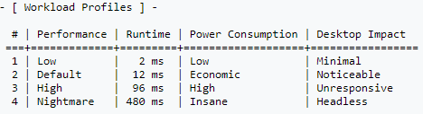

Benchmark
To Test the performance of Hashcat on our computer we can use a
Workload Profile of 3 (-w 3) to use as much computing power as it can while still preserving some GUI access.
example:• Test the performance by cracking NTLM
hashcat -w 3 --benchmark -m 1000
75MH/s
• Test the performance by cracking LM (LANMAN hash)
hashcat -w 3 --benchmark -m 3000
37MH/s
• Test the performance by cracking SHA512 Unix (sha512crypt)
hashcat -w 3 --benchmark -m 1800